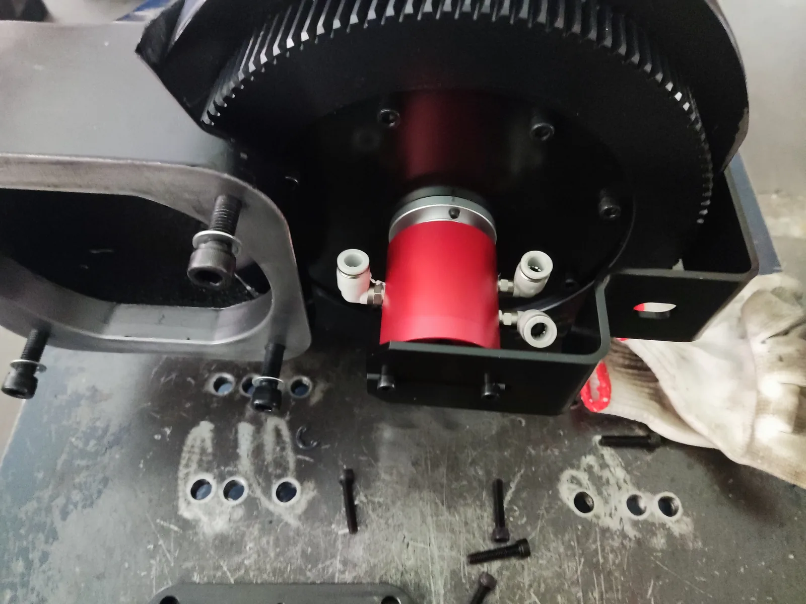

Пневматические ротационные соединения для задних патронов станков лазерной резки труб
Сравните двух- и трёхканальные исполнения для подачи сжатого воздуха во вращающийся задний патрон.
Независимые пневматические функции во вращающемся патроне
Для кого: для производителей станков лазерной резки труб и инженеров, проектирующих пневматическую систему заднего патрона.
Ротационное соединение связывает неподвижную подачу сжатого воздуха с независимо управляемыми функциями вращающегося заднего патрона. Число каналов выбирают по числу функций, которыми нужно управлять раздельно.
BP-3P-0004 и BP-2P-08-0001 — стандартные отправные варианты для этой задачи. Цеховые фотографии показывают тип монтажа; точная модель на каждом снимке не определена.

Установка на заднем патронеПодача сжатого воздуха во вращающийся задний патрон станка лазерной резки труб.
Для начала достаточно модели, фотографии или чертежа патрона
Если уже известны пневматические функции, давление или частота вращения, добавьте их. Мы запросим только следующую деталь, которая действительно нужна для подбора.
Два или три независимых канала сжатого воздуха
BP-2P-08-0001 и BP-3P-0004 применяются для сжатого воздуха заднего патрона. Выбор зависит от числа раздельно управляемых функций и требуемого интерфейса.
Три пункта, которые сужают выбор
1. Независимые пневматические функции
Посчитайте зажим, разжим и другие функции, которыми нужно управлять раздельно.
2. Известные условия работы
Укажите давление, максимальную или непрерывную частоту вращения, если они известны. Для первого запроса полный набор данных не обязателен.
3. Монтаж
Фотография или чертёж помогают проверить доступное пространство, интерфейс, подключения и направление шлангов.
Что помогает нам рекомендовать модель
Отправьте то, что у вас уже есть; для первого запроса не нужно собирать весь список.
| Что у вас может быть | Что это помогает проверить |
|---|---|
| Пневматические функции или число контуров | Подходит ли двух- или трёхканальное исполнение |
| Давление и частота вращения | Рабочую точку выбранной модели |
| Фотография или чертёж патрона | Монтажное пространство, интерфейс, подключения и направление шлангов |
| Существующая модель или данные станка | Ближайшую каталожную модель или основу заказного исполнения |
Для технологических и вспомогательных газов нужно отдельное решение
Эти две стандартные модели предназначены для сжатого воздуха заднего патрона. Для технологического или вспомогательного газа сообщите газ и условия работы; материалы, чистота и испытания проверяются отдельно.
Посмотрите установку на заднем патроне
Две цеховые фотографии показывают подачу сжатого воздуха к заднему патрону.
Нужно вращающееся соединение для заднего патрона?
Для начала достаточно модели, фотографии или чертежа патрона. Если известны число контуров, давление и частота вращения, добавьте их. Мы предложим подходящую стандартную модель или заказное исполнение и запросим только следующую важную деталь.
Вопросы о пневматической подаче в задний патрон
Какие стандартные модели применяются для сжатого воздуха заднего патрона?
BP-2P-08-0001 имеет два независимых канала, а BP-3P-0004 — три. Выбор зависит от числа раздельно управляемых функций и требуемого интерфейса.
Что отправить для рекомендации модели?
Для начала достаточно модели, фотографии или чертежа патрона. Если известны число контуров, давление и частота вращения, добавьте их.
Как реализуется передача технологических или вспомогательных газов?
Для них требуется отдельное решение. Сообщите газ и условия работы — мы проверим материалы, чистоту и испытания.